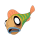
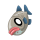
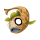
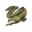
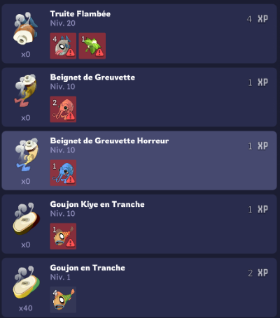

Guide du métier Pêcheur
Ressource
Pour récupérer une ressource il suffit juste de cliquer dessus et d'avoir le niveau nécessaire. Pour monter le niveau de métier il est nécessaire de récupérer des ressources de son niveau et de craft des items car chaque ressource récupérée ou chaque items créé donne de l'expérience dans le métier associé
Dans Dofus, pour le métier de pecheur, il y a 6 ressources et minimum une est déblocable tout les 20 niveaux de pecheur
| Nom | Image | Niveau Requis |
| Goujon |  | 1 |
| Truite |  | 20 |
| Poisson-Chat |  |
40 |
| Carpe d'Iem | 60 | |
| Brochet |  | 80 |
| Anguille |  | 100 |
Craft
Un craft, c'est à dire une combinaison d'items, rapporte de l'expérience dans le métier. Plus le niveau du métier est haut, plus il demande d'expérience et plus les crafts de bas niveau lui en donnent moins.
Voici quelque exemple de craft possible :
